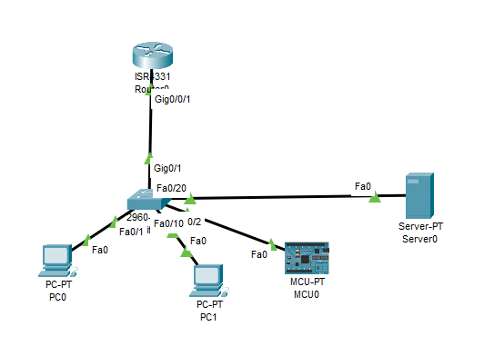

Bienvenido, soy
Soy un Junior Software Developer e IT Specialist. Me especializo en crear sistemas eficientes, desde programación orientada a objetos hasta bases de datos relacionales y análisis de datos.
Estudiante de TI orientado a resultados con una base sólida en programación orientada a objetos (Java, C++), bases de datos relacionales (MySQL) y topologías de red.
Tengo experiencia en el desarrollo de aplicaciones de escritorio utilizando patrones MVC/DAO y en la gestión de operaciones comerciales. Busco contribuir para entregar soluciones de software escalables y mantener arquitecturas de sistemas eficientes.
Actualmente estudio Ingeniería en Tecnologías de la Información y tengo un perfil técnico respaldado por certificaciones en ciencia de datos, ciberseguridad y redes.
Java, MySQL, MVC Architecture
Sistema de inventario de escritorio desarrollado con Java, MySQL y patrones de diseño MVC/DAO. Permite el manejo seguro de datos, operaciones CRUD dinámicas, filtros de búsqueda avanzados y control de acceso basado en roles para administradores.
Industrial Predictive Maintenance
Modelo de machine learning de mantenimiento predictivo (Random Forest) para analizar la telemetría de sensores industriales simulados. Visualizado a través de un panel interactivo en tiempo real para monitorear parámetros de salud operativa.

Network Security & Architecture
Diseño de arquitectura de red segura para planta industrial utilizando Cisco Packet Tracer, logrando una segregación exitosa del tráfico. Implementación de ACLs para bloquear accesos no autorizados y proteger activos críticos de maquinaria.